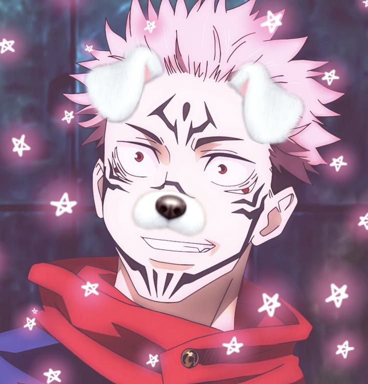
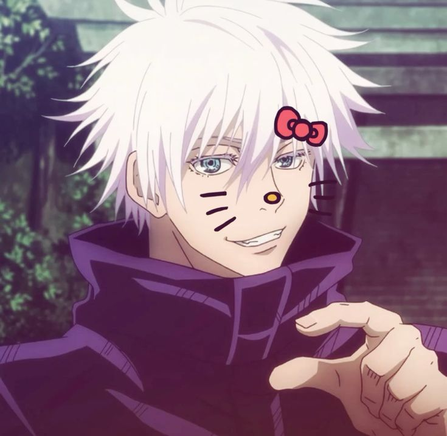
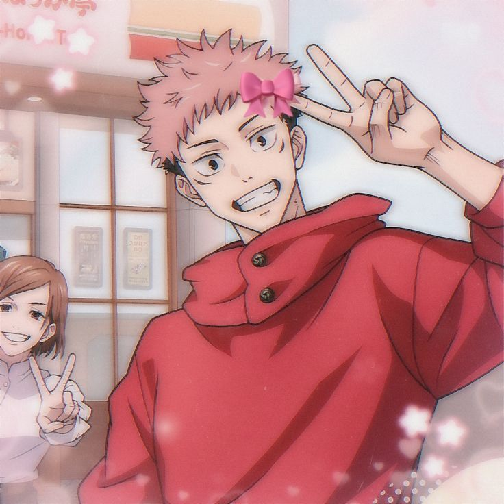
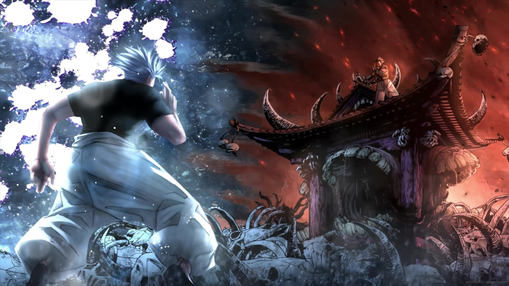

O Rei das Maldições é considerado uma das entidades mais poderosas do universo de Jujutsu Kaisen.
Explore Agora
O Rei das Maldições.

O feiticeiro mais forte.

Hospedeiro de Sukuna.
A Expansão de Domínio de Sukuna é uma das técnicas mais destrutivas de Jujutsu Kaisen.
